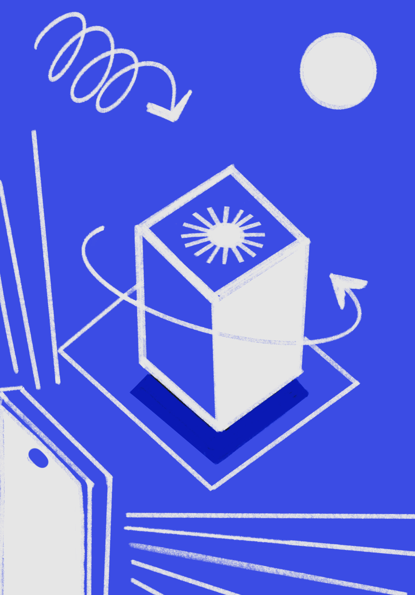
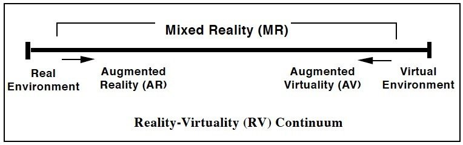
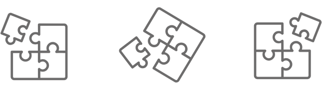
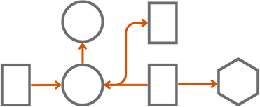
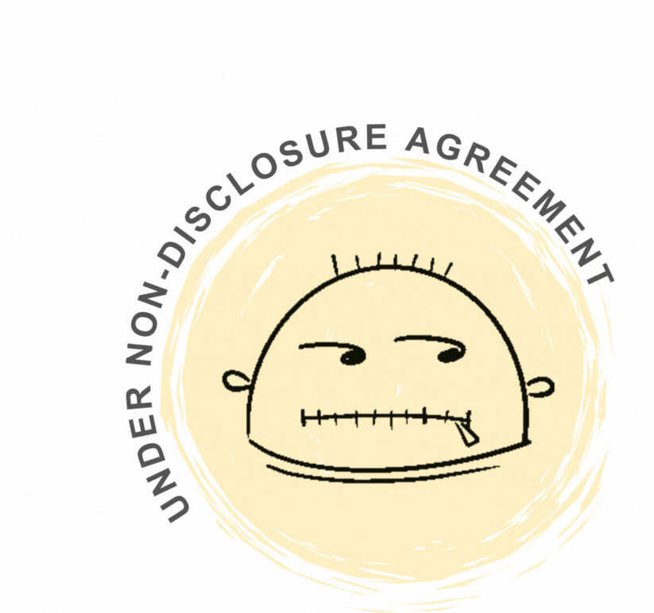

Designing for Virtual Continuum

Designing across web, AR, and fully immersive VR simultaneously — for users who had never worn a headset — meant that every interaction decision had to work at three different levels of presence at once. The design challenge wasn't just UX. It was building a process that could scale.
Background
Holosuit Pvt Ltd develops motion capture suits with haptic feedback, enabling skill development through their "Skill MetaVerse" platform. Their technology spans the full virtuality continuum — from web-based experiences through augmented reality to fully immersive virtual reality environments.



Challenge
A well-known agricultural university aimed to incorporate virtual reality tools and mediums into their teaching methods to provide practical learning experiences virtually. However, most of the modules were hands-on and required physical interaction. Our task was to develop learning objects that could be seamlessly integrated into the curriculum and provide students with practical and interactive experiments and activities.
Key Design Areas
Learning Objects
The use of virtuality continuum tools for designing 'learning objects' to teach various modules of an agricultural university curriculum. The immersive learning objects created through this process addressed the challenge of providing practical learning experiences by replicating real-life situations.
Multi-Modal Interaction Design
Because of the overlapping mode and environment of interaction, the designed experience had to be scaled from Web to AR to an immersive VR environment.
Pedagogy Design
Method of teaching in the virtual environment should balance between complexity and ease of use. It should be easy to navigate while still providing challenge in the educational context.
Framework Development
Streamlining the process for designing a learning object and being dependent on multiple departments to provide assets.
Seven-Phase Approach
-
01
Precedent Study & Market Analysis
The process started with understanding the technology in picture. It was followed by understanding the current market and the future scope of the technology.
-
02
User Research & SME Interview
There were two main stakeholders: the students and the professor. This phase involved understanding their affinity toward particular tech and also talking to subject matter experts to deeply understand the technical topic.
-
03
User Journey and Persona Development
To get a better understanding of user needs and point of view, various scenarios of user in each step of the continuum were mapped.
-
04
Conceptualising the Interaction
At each stage in the virtual environment, various scenarios were mapped and tested. The information architecture was defined and the scenarios were quickly prototyped and tested with hardware integration. The process was based on quick iteration and testing.
-
05
Hi-Fidelity Prototyping and Testing
The wireframes were refined based on the feedback and handed off for development.
-
06
Pedagogy Design
Designing for a comprehensive curriculum was a challenge. This holistic approach aimed to enhance the pedagogical framework and provide a well-rounded virtual learning experience.
-
07
Framework Development
Each learning object we designed required the same negotiations from scratch — with curriculum teams, 3D artists, hardware engineers, and subject matter experts. The framework we built at the end of the first module made that coordination legible and repeatable.
The Framework — Why It Mattered
The most durable output of this project wasn't any single learning object. It was the process for making them.
Designing across three environments simultaneously created a coordination problem that good UX alone couldn't solve. Assets came from different departments — curriculum content, 3D models, domain expertise — each operating on different timelines and with different vocabularies for what they were building. The technology stack changed between web, AR, and VR. Interaction constraints were different at each level of immersion. Without a shared process model, every new learning object would require the same negotiation from scratch.
The internal framework mapped the full lifecycle of a learning object: from curriculum input through environment selection, asset specification, interaction design, and testing protocol. It defined which decisions required SME input, which needed hardware testing before design could proceed, and which could move forward in parallel. It was medium-agnostic — the same framework worked whether the output was a browser-based experience or a fully immersive VR module.
The result was a handoff document that the Holosuit development team could use independently for subsequent modules, reducing the cycle time for each new learning object and making the design process legible to non-designers for the first time.
Functional Solutions
Simplified Interactions
Reduced keyboard and mouse complexity for technology-novice users.
Instructional Alignment
Breaking instructions into manageable segments with SME consultation.
Scene Understanding
Contextualising digital elements within agricultural practice.
Process Framework
Streamlining collaborative asset creation across departments.
